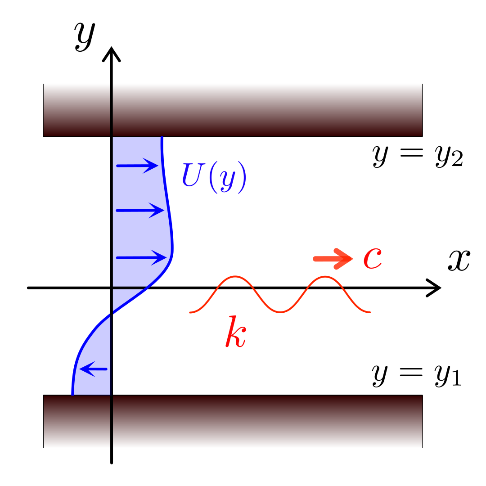
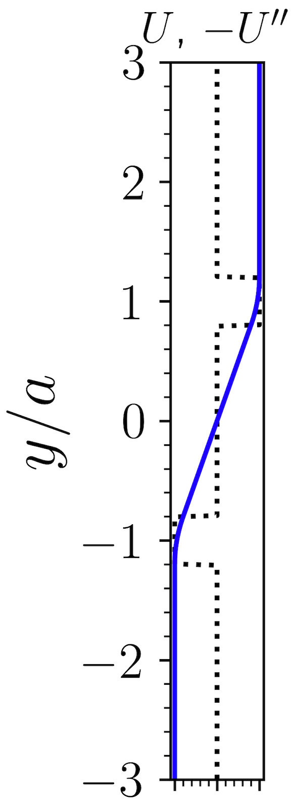
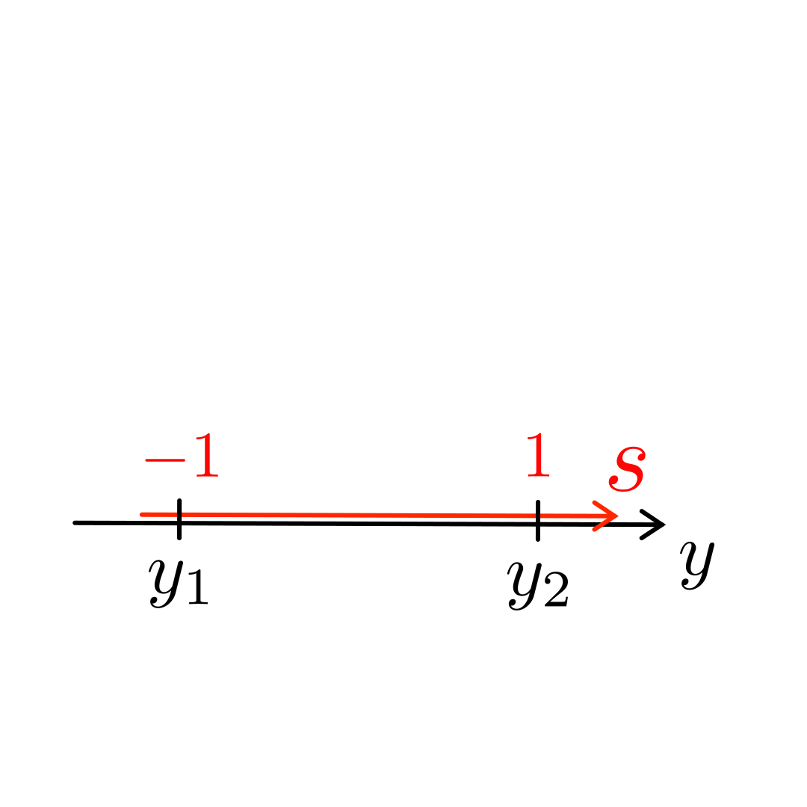
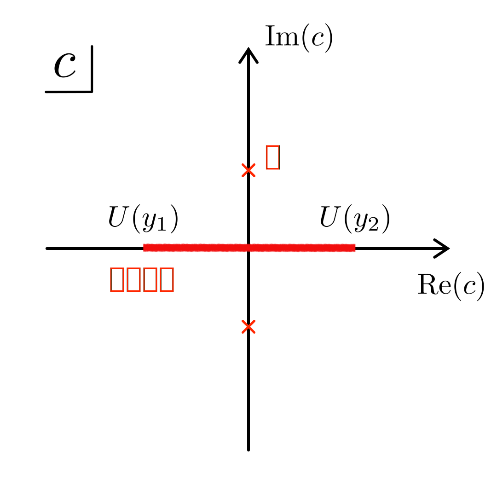
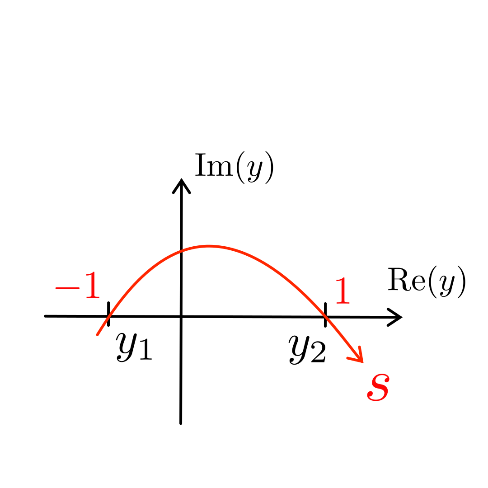
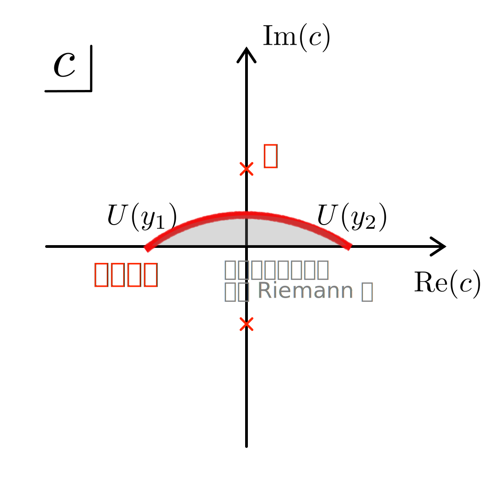
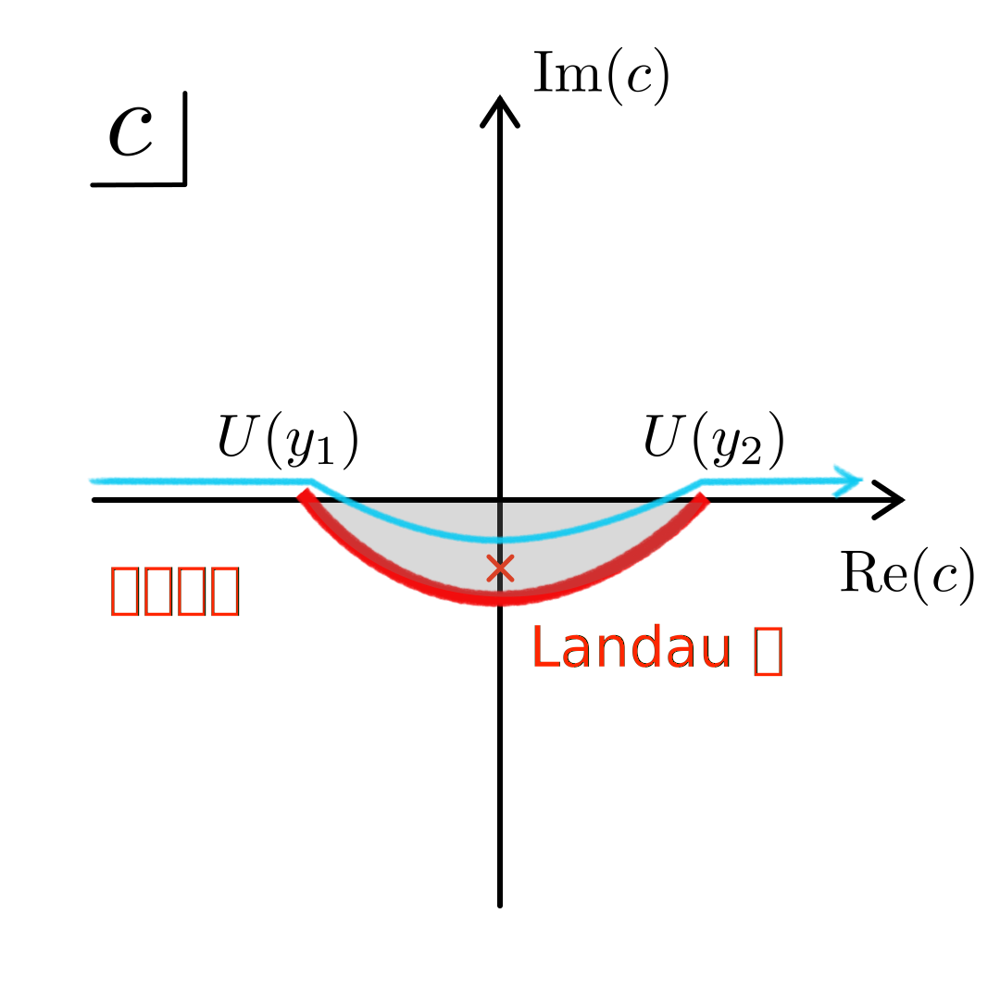
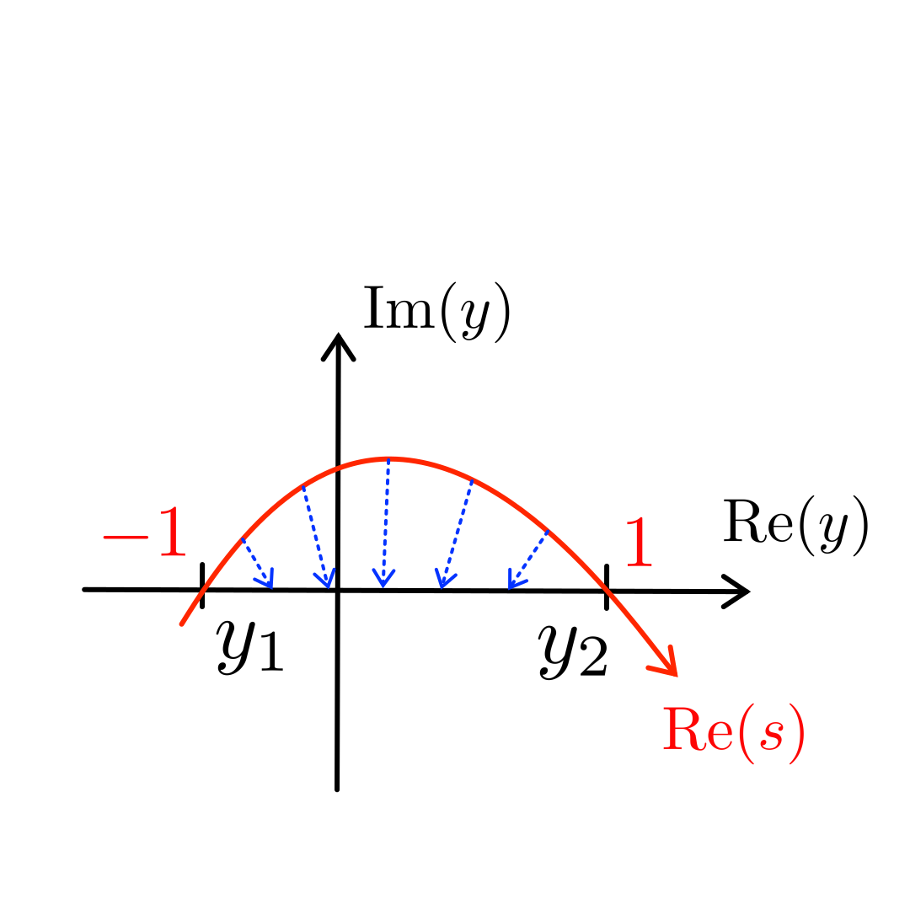

スペクトル変形法を用いた非粘性水平シアー流の線形安定性解析
深部・ダイナ合同セミナー ()
スペクトル変形法を用いた
非粘性水平シアー流の線形安定性解析
要旨:
スペクトル変形法 (2022 年度 後期の合同セミナーで紹介) を用いて, 非粘性水平シアー流の線形安定性解析を行い, その結果を JpGU 2023 で発表した. 本発表では, その発表資料 (ポスター) の行間を埋めたバージョンを示すとともに, JpGU 2023 でいただいた反論・コメントをもとに研究をさらに進展させたものを紹介する.
本研究は, 国連の掲げる「持続可能な開発目標 (SDGs)」のどの項目にも貢献しません
中島 涼輔 (九州大学 大学院理学研究院)
- [O] Overview Mode / [F] Fullscreen Mode
- [G+number] Jump to Slide
-
スライド中のマークを hover すると詳細が表示されます
こんな風に
非粘性水平シアー流の線形安定性解析とは？
-
水平 2 次元 $(x,y)$ の非粘性・非圧縮流体:
$(\uppartial\bm{u}/\uppartial
t)+(\bm{u}\ip\grad)\bm{u}=-\grad(p/\rho_0)$,
$\div\bm{u}=0$
 - 速度場を $\bm{u}=U(y)\hat{\bm{e}}_x+\bm{u}_1(x,y,t)$ とし, 背景流 $|U|\gg$ 摂動 $|\bm{u}_1|$ を仮定
- Fourier 変換 $\bm{u}_1=\mathrm{Re}\left[\tilde{\bm{u}}(y;k,c)\upe^{\upi k(x-ct)}\right]$ し, 位相速度 $c$ の実・虚部から時間発展を理解
-
基礎方程式:
Rayleigh 方程式
[e.g.
Drazin & Reid (1981)]
\[\left(c-U(y)\right)\underbrace{\left(k^2\tilde{\psi}-\frac{\upd^2\tilde{\psi}}{\upd y^2}\right)}_{\text{渦度 : } \tilde{\zeta}}\,=\,\frac{\upd^2 U(y)}{\upd y^2}\tilde{\psi}\]$\psi$ は流線関数: $u_{1x}=(\uppartial \psi_1/\uppartial y)$, $u_{1y}=-(\uppartial \psi_1/\uppartial x)$- $x$ 方向の波数 $k$ と $U(y)$ を与えたときの, 境界条件を満たす $c$ と $\tilde{\psi}$ の組を探す固有値問題
- $c=U(y)$ を満たす $y=y_\mathrm{c}$ に微分方程式の確定特異点 (最高階微分の係数が $0$) あり
-
地磁気変動の原因として重要かもしれない地球外核内の磁気流体波動に現れる
類似の特異点に対処できるような方法を見つけるために本研究を行った
教科書レベルの例 (区分線形な背景流分布) e.g. Vallis (2006)
-
このとき, Rayleigh 方程式は
($c\neq U(y)$ ならば)\[k^2\tilde{\psi}-\frac{\upd^2\tilde{\psi}}{\upd y^2}\,=\,\textcolor{red}{\cancel{\textcolor{black}{\frac{(\upd^2U(y)/\upd y^2)}{c-U(y)}\tilde{\psi}}}}\textcolor{red}{\,=\,0}\] -
境界・接続条件は,
圧力 $p$ と $y$ 方向の変位 $\eta$ が連続\[\begin{align} \tilde{p}/\rho_0\,&=\,\left(c-U(y)\right)(\upd\tilde{\psi}/\upd y)+\left(\upd U(y)/\upd y\right)\tilde{\psi}\notag\\ \tilde{\eta}\,&=\,\tilde{\psi}/\left(c-U(y)\right)\notag \end{align}\]$U(y)$ が不連続ならば $\tilde{u}_y$ も不連続
-
非自明な解 ($\tilde{\psi}\neq0$)
をもつための条件
\[\det\begin{pmatrix} \upe^{ky_2} & \upe^{-ky_2} & 0 & 0 & 0 & 0 \\ \upe^{ka} & \upe^{-ka} & -\upe^{ka} & -\upe^{-ka} & 0 & 0 \\ \upe^{ka} & -\upe^{-ka} & -\upe^{ka}-\dfrac{U_0\upe^{ka}}{ka(c-U_0)} & \upe^{-ka}-\dfrac{U_0\upe^{-ka}}{ka(c-U_0)} & 0 & 0 \\ 0 & 0 & -\upe^{-ka}-\dfrac{U_0\upe^{-ka}}{ka(c+U_0)} & \upe^{ka}-\dfrac{U_0\upe^{ka}}{ka(c+U_0)} & \upe^{-ka} & -\upe^{ka} \\ 0 & 0 & -\upe^{-ka} & -\upe^{ka} & \upe^{-ka} & \upe^{ka} \\ 0 & 0 & 0 & 0 & \upe^{ky_1} & \upe^{-ky_1} \end{pmatrix}\,=\,0\]
-
これを計算すると
\[\begin{align} \textcolor{red}{c^2}\,&+\,c\left(\frac{U_0}{2ka}\right)\frac{\upe^{-2k(-a-y_1)}-\upe^{-2k(y_2-a)}}{1-\upe^{-2k(y_2-y_1)}}\notag\\ \,&\textcolor{red}{-\,\left(\frac{U_0}{2ka}\right)^2\left[(1-4ka-\upe^{-4ka})\textcolor{black}{\frac{(1-\upe^{-2k(-a-y_1)})(1-\upe^{-2k(y_2-a)})}{1-\upe^{-2k(y_2-y_1)}}}+4k^2a^2\right.}\notag\\ &\qquad\qquad\textcolor{red}{\left.\textcolor{black}{-2ka(1-\upe^{-4ka})\frac{\upe^{-2k(-a-y_1)}+\upe^{-2k(y_2-a)}-2\upe^{-2k(y_2-y_1-2a)}}{1-\upe^{-2k(y_2-y_1)}}}\right]\,=\,0}\notag \end{align}\]$k$ を与えたときの $c$ を計算すれば
\[ \begin{align} \det\begin{pmatrix} 1 & \upe^{-2ky_2} \\ 1 & \upe^{-2ka} \end{pmatrix} \det(\mathsf{D}-\mathsf{C}\mathsf{A}^{-1}\mathsf{B}) \,=\,\underbrace{\det\begin{pmatrix} 1 & \upe^{-2ky_2} \\ 1 & \upe^{-2ka} \end{pmatrix}\det\begin{pmatrix} \upe^{-2ka} & 1 \\ \upe^{2ky_1} & 1 \end{pmatrix}}_{\neq0}\begin{pmatrix} -1-\dfrac{U_0}{2ka(c-U_0)}-\dfrac{\upe^{-2ky_2}}{\upe^{-2ka}-\upe^{-2ky_2}} & -\dfrac{U_0\upe^{-2ka}}{2ka(c-U_0)}-\dfrac{\upe^{-2k(a+y_2)}}{\upe^{-2ka}-\upe^{-2ky_2}} \\ -\dfrac{U_0\upe^{-2ka}}{2ka(c+U_0)}+\dfrac{\upe^{-2k(a-y_1)}}{\upe^{-2ka}-\upe^{2ky_1}} & 1-\dfrac{U_0}{2ka(c+U_0)}+\dfrac{\upe^{2ky_1}}{\upe^{-2ka}-\upe^{2ky_1}}\end{pmatrix}\,=\,0\notag \end{align}\] ただし, ブロック行列の行列式の公式を使った. ここで, \[\begin{align} \mathsf{D}\,&=\,\begin{pmatrix} -1-\dfrac{U_0}{2ka(c-U_0)} & -\dfrac{U_0\upe^{-2ka}}{2ka(c-U_0)} & 0 & 0 \\ -\dfrac{U_0\upe^{-2ka}}{2ka(c+U_0)} & 1-\dfrac{U_0}{2ka(c+U_0)} & 0 & -1 \\ -\upe^{-2ka} & -1 & \upe^{-2ka} & 1 \\ 0 & 0 & \upe^{2ky_1} & 1 \end{pmatrix}\notag \\ \mathsf{C}\mathsf{A}^{-1}\mathsf{B}\,&=\,\begin{pmatrix}1 & 0 \\ 0 & 0 \\ 0 & 0 \\ 0 & 0 \end{pmatrix}\frac{1}{\upe^{-2ka}-\upe^{-2ky_2}}\begin{pmatrix}\upe^{-2ka} & -\upe^{-2ky_2} \\ -1 & 1\end{pmatrix}\begin{pmatrix}0 & 0 & 0 & 0 \\ -1 & -\upe^{-2ka} & 0 & 0 \end{pmatrix}\,=\,\frac{1}{\upe^{-2ka}-\upe^{-2ky_2}}\begin{pmatrix}\upe^{-2ky_2} & \upe^{-2k(a+y_2)} & 0 & 0 \\ 0 & 0 & 0 & 0 \\ 0 & 0 & 0 & 0 \\ 0 & 0 & 0 & 0 \end{pmatrix}\notag \end{align}\]
$U(y)$ の安定性を議論できる (結果は次スライド)
(ほぼ) 区分線形な背景流分布
-
より一般の $U(y)$ の場合は
数値的な方法が必要 (方法は後で説明) -
手始めに, 区分線形な背景流分布の
折れ曲がり部分を曲線で滑らかに繋げる \[\frac{U(y)}{U_0}\,=\, \begin{cases} 1 & \phantom{-}a+d < y \leq y_2\\[1pt] 1-\dfrac{(a+d-y)^2}{4ad} & \phantom{-}a-d < y \leq a+d \\[3pt] y/a & -a+d < y \leq a-d\\[1pt] -1+\dfrac{(-a-d-y)^2}{4hd} & -a-d < y \leq -a+d\\[3pt] -1 & \phantom{-a-}y_1 \leq y \leq -a-d \end{cases}\]繋ぎ目部分を $U(y)=Ay^3+By^2+Cy+D$ とすると, \[\begin{pmatrix} (a+d)^3 & (a+d)^2 & (a+d) & 1 \\ 3(a+d)^2 & 2(a+d) & 1 & 0 \\ 3(a-d)^2 & 2(a-d) & 1 & 0 \\ (a-d)^3 & (a-d)^2 & (a-d) & 1 \end{pmatrix} \begin{pmatrix}A \\ B \\ C \\ D\end{pmatrix}\,=\, \begin{pmatrix}U(a+d) \\ (\upd U/\upd y)|_{y=a+d} \\ (\upd U/\upd y)|_{y=a-d} \\ U(a-d)\end{pmatrix}\] を満たすように, $A$, $B$, $C$, $D$ を決めれば良い. 左辺の行列の逆行列は \[ \frac{1}{4d^3}\begin{pmatrix} -1 & d & d & 1 \\ 3a & -d(3a-d) & -d(3a+d) & -3a \\ -3(a-d)(a+d) & d(a-d)(3a+d) & d(a+d)(3a-d) & 3(a+d)(a-d) \\ (a-d)^2(a+2d) & -d(a-d)^2(a+d) & -d(a+d)^2(a-d) & -(a+d)^2(a-2d)\end{pmatrix} \]
- $y_1=-3a$, $y_2=3a$, $d=0.01a$ で計算
-
区分線形な背景流分布 ($d\to0$)
の解析解を
だいたい再現できた 少しズレあり
青丸: $d\to0$ の解析解 (他は次スライドで説明)
(ほぼ) 区分線形な背景流分布
-
確定特異点 $y=y_\mathrm{c}$ により生じる
連続スペクトル ($-U_0\leq\mathrm{Re}(c)\leq U_0$, $\mathrm{Im}(c)=0$)\[(c-U(y))\underbrace{\left(k^2\tilde{\psi}-\frac{\upd^2\tilde{\psi}}{\upd y^2}\right)}_{\propto\,\delta(y-y_\mathrm{c})}\,=\,\textcolor{red}{\underbrace{\cancel{\textcolor{black}{\frac{\upd^2U(y)}{\upd y^2}\tilde{\psi}}}}_{\hspace{-2.3cm}\text{(繋ぎ目を除いて)}\,0}}\]解析解では, $c\neq U(y)$ を仮定していたので出てこない - 小さい $k$ での不安定・減衰モード($\mathrm{Im}(c)\neq0$)
-
大きい $k$ での中立波 ($\mathrm{Im}(c)=0$)
のペア
-
2 つの中立波を表す曲線 $c(k)$ が
ぶつかる ($\mathrm{Re}(c)$ が一致する) $k$ で
不安定モードが発生 -
「2 つの中立波の共鳴により
不安定が生じる」と解釈する
-
2 つの中立波を表す曲線 $c(k)$ が
青丸: $d\to0$ の解析解
(ほぼ) 区分線形な背景流分布 ($\psi_1$ と $\zeta_1$ の構造)
不安定モード
[右] 色: 流線関数 $\psi_1$, 線: 渦度 $\zeta_1$
中立波 (境界 Rossby 波)
- 見やすさのために $d=0.2a$ の場合を示す
-
不安定モードの固有関数 ($\psi_1$, $\zeta_1$) は,
中立波のペアの固有関数を (位相差をつけて) 重ねたものと似ている
[共鳴と解釈できる根拠]
中立波ペアの共鳴の数学的な説明
(wave interaction theory)
e.g.
Heifetz+ (2020)
-
Fourier 変換をやり直し
\[\begin{align} \zeta_1\,&=\,\textcolor{red}{\xcancel{\textcolor{black}{\mathrm{Re}\left[\tilde{\zeta}(y;k,c)\upe^{\upi k(x-ct)}\right]}}}\,=\,\mathrm{Re}\left[Z(y,\textcolor{red}{t};k)\upe^{\upi \left[kx+\varphi(\textcolor{red}{y},t;k)\right]}\right]\notag\\ \psi_1\,&=\,\mathrm{Re}\left[\varPsi(y,\textcolor{red}{t};k)\upe^{\upi \left[kx+\varphi(\textcolor{red}{y},t;k)\right]}\right]\notag \end{align}\]
-
$\zeta_1=-\nabla^2\psi_1$ より
\[\varPsi(\textcolor{red}{y},t)\upe^{\upi\varphi(\textcolor{red}{y},t)}\,=\,\int_{y_1}^{y_2}Z(\textcolor{blue}{y_*},t)\upe^{\upi\varphi(\textcolor{blue}{y_*},t)}G(y,y_*;k)\upd y_*\]$G(y,y_*;k)$ はラプラシアンの Green 関数
$(\partial^2G(y,y_*)/\partial y^2)-k^2G(y,y_*)=-\delta(y-y_*)$ とすると \[\begin{align} G(y,y_*;k)\,&=\,\frac{\sinh\left[k(y_2-y)\right]\sinh\left[k(y_*-y_1)\right]}{k\sinh\left[k(y_2-y_1)\right]}H(y-y_*)\notag\\ \,&+\,\frac{\sinh\left[k(y_2-y_*)\right]\sinh\left[k(y-y_1)\right]}{k\sinh\left[k(y_2-y_1)\right]}H(y_*-y)\notag\end{align}\]
-
位置 $\textcolor{blue}{y_*}$ の
$\zeta_1$ によって
離れた場所 ($\textcolor{red}{y}$) の $\psi_1$ が
どれだけ生じるか -
$\textcolor{red}{y} $
にある中立波は,
$\textcolor{blue}{y_*}$
にある中立波から
どのくらい影響を受けるか
-
位置 $\textcolor{blue}{y_*}$ の
$\zeta_1$ によって
-
Rayleigh 方程式の元となる式に代入すると
\[\frac{\uppartial Z(\textcolor{red}{y},t)}{\uppartial t}\,=\,k\frac{\upd^2 U(y)}{\upd y^2}\int_{y_1}^{y_2}Z(\textcolor{blue}{y_*},t)\sin(\Updelta \varphi) G(y,y_*)\upd y_* \]ここで, $\Updelta \varphi(y,y_*,t)\equiv\varphi(\textcolor{blue}{y_*},t)-\varphi(\textcolor{red}{y},t)$
-
$d\ll 1$ の (ほぼ) 区分線形な背景流分布では
\[\begin{align} \frac{\uppartial Z(\textcolor{red}{a},t)}{\uppartial t}\,&\approx\,k\left.\frac{\upd^2 U(y)}{\upd y^2}\right|_{y=a}Z(\textcolor{blue}{-a},t)\sin[\Updelta \varphi(a,-a)] G(a,-a)\notag\\ \frac{\uppartial Z(\textcolor{blue}{-a},t)}{\uppartial t}\,&\approx\,k\left.\frac{\upd^2 U(y)}{\upd y^2}\right|_{y=-a}Z(\textcolor{red}{a},t)\sin[\Updelta \varphi(-a,a)] G(-a,a)\notag \end{align}\]
$\textcolor{red}{a}$ と $\textcolor{blue}{-a}$ にある中立波が
同位相 or 逆位相でなければ
強め合ったり,
弱めあったりできる
中立波ペアの共鳴の物理的な説明
-
wave interaction theory より
\[-\frac{1}{k}\frac{\uppartial \varphi(y,t)}{\uppartial t}\,=\,U(y)\,+\,\frac{\upd^2 U(y)}{\upd y^2}\int_{y_1}^{y_2}\frac{Z(y_*,t)}{Z(y,t)}\cos(\Updelta \varphi) G(y,y_*)\upd y_*\]
-
$d\ll1$ の (ほぼ) 区分線形な背景流分布で,
中立波のとき
\[\underbrace{-\frac{1}{k}\frac{\uppartial \varphi(a,t)}{\uppartial t}}_{\hspace{-2cm}正味の位相速度}\,\approx\,U(a)\,+\,\underbrace{\left.\frac{\upd^2 U}{\upd y^2}\right|_{y=a}G(a,a)}_{\hspace{-1.8cm}\text{Rossby}\,\text{波の位相速度}}\,,\qquad-\frac{1}{k}\frac{\uppartial \varphi(-a,t)}{\uppartial t}\,\approx\,U(-a)\,+\,\left.\frac{\upd^2 U}{\upd y^2}\right|_{y=-a}G(-a,-a) \]ここで, $G(a,a)>0$, $G(-a,-a)>0$ - 背景渦度は $u_{1y}$ で移流される: $[(\uppartial/\uppartial t)+U(\uppartial/\uppartial x)]\zeta_1=(\upd^2 U/\upd y^2)u_{1y}$
[右] 色: 流線関数 $\psi_1$, 線: 渦度 $\zeta_1$
合同セミナー
スライドより
中立波ペアの共鳴の物理的な説明
-
さらに, 2 つの中立波の正味の位相速度が
一致する $k$ の場合について考える
(特に $y_1=-y_2$ の場合は $\mathrm{Re}(c)=0$) -
一方の中立波の渦がつくる $u_{1y}$ は,
その中立波付近の $\zeta_1$ を変化させるだけでなく
他方の中立波の近くの $\zeta_1$ も変化させる -
一方の中立波の渦がつくる $u_{1y}$ が,
他方の中立波の渦を強める配置になっていれば
振幅がどんどん大きくなっていって不安定
[右] 色: 流線関数 $\psi_1$, 線: 渦度 $\zeta_1$
(ほぼ) 区分線形な背景流分布 ($\psi_1$ と $\zeta_1$ の構造)
連続スペクトル
[右] 色: 流線関数 $\psi_1$, 線: 渦度 $\zeta_1$
-
連続スペクトルの固有関数では
$\tilde{\zeta}$ が確定特異点 $y=y_\mathrm{c}$ にデルタ関数的に局在- $\zeta_1=-\nabla^2\psi_1$ より, $y=y_\mathrm{c}$ で $(\upd \tilde{\psi}/\upd y)$ が不連続
- 中立波に似た構造も, 持ち合わせている
-
wave interaction theory を使ってみると,
$d\ll1$ の (ほぼ) 区分線形な背景流分布では\[\begin{align}-\frac{1}{k}\frac{\uppartial \varphi(y_\mathrm{c},t)}{\uppartial t}\,&=\,U(y_\mathrm{c})\,\notag\\ -\frac{1}{k}\frac{\uppartial \varphi(a,t)}{\uppartial t}\,&=\,U(a)\,+\,\left.\frac{\upd^2 U}{\upd y^2}\right|_{y=a}\textcolor{red}{\frac{Z(y_\mathrm{c},t)}{Z(a,t)}}G(a,y_\mathrm{c})\,+\,\underbrace{\left.\frac{\upd^2 U}{\upd y^2}\right|_{y=a}G(a,a)}_{{\hspace{-1.9cm}\text{Rossby}\,\text{波の位相速度}}}\notag\end{align}\]固有モードでは, 位相速度は位置によらないはずので,
上 2 式が一致するように $Z(y_\mathrm{c},t)/Z(a,t)$ が決まっている -
中立波は, 連続スペクトルのうち
$Z(y_\mathrm{c},t)=0$ (ゆえに, $(\upd \tilde{\psi}/\upd y)$ が連続) となる特別なモード
$\tanh$ 型の背景流分布 e.g. Iga (2013)
-
以上の説明により, 我々は
非粘性水平シアー流の線形安定論を
「完全に理解した完全に理解した」ので,
別の背景流分布を考えてみる [ここから本題] - $y_1=-8a$, $y_2=8a$ で計算
-
小さい $k$ で不安定モードがある点は
(ほぼ) 区分線形な背景流分布
の場合と似ているが,
共鳴する中立波のペアが見当たらない
- $U(y)$ の関数形は似ているのに...
-
上手い説明のようにみえた
中立波の共鳴による解釈は
いつも使えるわけではない？
本研究の目的
-
あらゆる背景流分布に対して,
「中立波ペアの共鳴により不安定モードが
生じる」という解釈は可能か？
水色の領域は後で説明
繋ぎ目部分を太らせる
-
(ほぼ) 区分線形と $\tanh$ 型の違い
\[(c-U(y))\left(k^2\tilde{\psi}-\frac{\upd^2\tilde{\psi}}{\upd y^2}\right)\,=\,\textcolor{red}{\underbrace{\textcolor{black}{\frac{\upd^2U(y)}{\upd y^2}\tilde{\psi}}}_{\hspace{-1.5cm}0\,\text{にできない}}}\]
-
特に, $(\upd^2 U/\upd
y^2)|_{y=y_\mathrm{c}}=0$ か
$(\upd^2 U/\upd y^2)|_{y=y_\mathrm{c}}\neq0$ かの違いが
(すぐに見つかる) 中立波の存在に重要 -
このことを信じてもらうために
まず, (ほぼ) 区分線形な背景流分布の
繋ぎ目部分の厚さ $d$ を太らせる実験
を行った- $d=0.01a$ は既に示している
- 以下で $d=0.2a$, $0.6a$, $a$ を示す
水色の領域: $(\upd^2 U/\upd y^2)|_{y=y_\mathrm{c}}\neq0$ となる $\mathrm{Re}(c)$ の範囲
繋ぎ目部分を太らせる
-
中立波を表す曲線は,
$(\upd^2 U/\upd y^2)|_{y=y_\mathrm{c}}\neq0$ となる
$\mathrm{Re}(c)$ の範囲を
避けるように存在 -
$d\to a$ で, その曲線は
グラフの上下から
$\mathrm{Re}(c)=0$ へ押し込まれて
消えてしまう
水色の領域: $(\upd^2 U/\upd y^2)|_{y=y_\mathrm{c}}\neq0$
となる $\mathrm{Re}(c)$ の範囲
Iga (2013) のアイデア
-
消えてしまう中立波に対して, 以下の 3 つの説を考えた
- 中立波の共鳴による解釈は, 限られた場合にしか使えない (△)
- 探し方が悪いだけで, 実は連続スペクトルの中に中立波が埋もれている
- 連続スペクトルの束が共鳴する中立波と似た役割をする
[右] 色: 流線関数 $\psi_1$, 線: 渦度 $\zeta_1$
-
$U(y)$ の一部 (窓と呼ぶ) を $(\upd^2
U(y)/\upd y^2)=0$ と
なるように変更し, 得られた曲線 $c(k)$ から
元の背景流分布における中立波の $c(k)$ を予想する -
Iga (2013) に記載された手順を使うと,
元の背景流分布における連続モードのうち
$(\upd \tilde{\psi}/\upd y)$ が連続なモードを抽出できたことになる
- 上手い方法ではあるが, 素直な説明ではない
- 微分は連続でも, 対数特異性 (後述) は残っている
窓をあける
-
窓をあけるとどのような結果になるのかを,
5 層に増やした (ほぼ) 区分線形な
背景流分布を用いて示す -
$y_1=2a$, $y_2=2a$, $b=a/3$, $U_1=U_0/2$
\[\frac{U(y)}{U_0}\,=\, \begin{cases} 1 & \phantom{-}a+d < y \leq y_2 \\[1pt] 1-\dfrac{[1-(U_1/U_0)](a+d-y)^2}{4(a-b)d} & \phantom{-}a-d < y \leq a+d \\[3pt] \dfrac{1-(U_1/U_0)}{a-b}(y-a)+1 & \phantom{-}b+d < y \leq a-d \\[3pt] \dfrac{[1-(U_1/U_0)](b-d-y)^2}{4(a-b)d}-\dfrac{(U_1/U_0)(b+d-y)^2}{4bd}+(U_1/U_0) & \phantom{-}b-d < y \leq b+d \\[3pt] \dfrac{(U_1/U_0)}{b}y & -b+d < y \leq b-d\\[3pt] \dfrac{(U_1/U_0)(-b-d-y)^2}{4bd}-\dfrac{[1-(U_1/U_0)](-b+d-y)^2}{4(a-b)d}-(U_1/U_0) & -b-d < y \leq -b+d \\[3pt] \dfrac{1-(U_1/U_0)}{a-b}(y+a)-1 & -a+d < y \leq -b-d \\[3pt] -1+\dfrac{[1-(U_1/U_0)](-a-d-y)^2}{4(a-b)d} & -a-d < y \leq -a+d \\[1pt] -1 & \phantom{-a-}y_1 \leq y \leq -a-d \end{cases}\]
-
$d=a/3$ のとき, $ka\to(2/3)ka$
とすると
3 層の場合の $d=a$ と等価 - $d=0.2a$ で計算
- 窓の部分に中立波の曲線が現れる
水色の領域: $(\upd^2 U/\upd y^2)|_{y=y_\mathrm{c}}\neq0$ となる $\mathrm{Re}(c)$ の範囲
[ここからが本当の本題]
今回の発表の本当の目的
-
3 つの説
- 中立波の共鳴による解釈は, 限られた場合にしか使えない (△)
- 探し方が悪いだけで, 実は連続スペクトルの中に中立波が埋もれている (Iga, 2013)
- 連続スペクトルの束が共鳴する中立波と似た役割をする (← この説はどうか？)
本研究の本当の目的
スペクトル変形法 (後で説明) を用いて,
普通の意味での固有値とは異なる「固有値」を掘り起こし,
「連続スペクトルの束が共鳴する中立波と似た役割をする」という
説明が可能かどうかを調べる
ここまでの固有値問題を解くのに使った方法

-
Chebyshev 選点法
(スペクトル変形なし)
- 境界条件: $y=y_1$, $y_2$ で $\tilde{\psi}=0$
- 座標変換 $y(s)=y_1+(y_2-y_1)(s+1)/2$ で境界を $s=\pm1$ に移す
- Chebyshev 多項式 $T_n(s)$ で展開 (打ち切り次数 $N_\mathrm{t}$): $\tilde{\psi}(s)=\sum_{n=0}^{N_\mathrm{t}}\tilde{\psi}_nT_n(s)$
-
分点 $s_m\equiv\cos(m\uppi/N_\mathrm{t})$
($m=1,2,\ldots,N_\mathrm{t}-1$) 上で
Rayleigh 方程式を満たす $N_\mathrm{t}-1$ 本の式に, 境界条件を加えた
$(N_\mathrm{t}+1)\times(N_\mathrm{t}+1)$ 行列の一般化固有値問題
- 目的達成のために, この方法にスペクトル変形法を組み込む
固有値 $=$ Green 関数の極
-
関数 $f(y)$ に対して
\[\underbrace{\left[\left(c-U(y)\right)\left(k^2-\frac{\upd^2}{\upd y^2}\right)\,-\,\frac{\upd^2 U(y)}{\upd y^2}\right]\tilde{\psi}(y)}_{\hspace{-1cm}=\,0\,\text{:}\,\text{Rayleigh}\,\text{方程式}}\,=\,f(y)\quad\Longleftrightarrow\quad\tilde{\psi}(y)\,=\,\int_{y_2}^{y_1}f(y_*)K(y,y_*;k,c)\upd y_*\]$K(y,y_*;k,c)$ は Rayleigh 方程式の Green 関数\[K(y,y_*;k,c)\,=\,-\frac{\psi_2(y)\psi_1(y_*)H(y-y_*)+\psi_1(y)\psi_2(y_*)H(y_*-y)}{\left(\textcolor{red}{c-U(y_*)}\right)\textcolor{red}{W(\psi_1,\psi_2)}}\,,\qquad W(\psi_1,\psi_2)=\psi_1\frac{\upd\psi_2}{\upd y}-\psi_2\frac{\upd\psi_1}{\upd y}\]$\psi_1$ と $\psi_2$ は一方の境界条件だけを満たす Rayleigh 方程式の解 ($\psi_1(y_1)=\psi_2(y_2)=0$)
-
$K(y,y_*;k,c)$ が無限大になるような $c$ (極)
がスペクトル (固有値) に対応
- $W(\psi_1,\psi_2)=0$ は, 中立波と不安定・減衰モードの固有値
- $c=U(y)$ ($y_1\leq y\leq y_2$) は連続スペクトル
特異点付近の解の違いが
Green 関数の極のふるまいの違いをつくる
-
Rayleigh 方程式の確定特異点 $y=y_\mathrm{c}$
で許容される特異性
[$(y-y_\mathrm{c})(\upd^2\tilde{\psi}/\upd y^2)$ が有限]- 微分の不連続: $(\upd\tilde{\psi}/\upd y)\propto \mathrm{H}(y-y_\mathrm{c})$, $\tilde{\zeta}\propto\delta(y-y_\mathrm{c})$
- 対数特異性: $(\upd\tilde{\psi}/\upd y)\propto \ln|y-y_\mathrm{c}|$
-
確定特異点まわりの Frobenius 解
[e.g.
Drazin & Reid (1981)]
\[\begin{align} \tilde{\psi}_\mathrm{I}\,&=\,(y-y_\mathrm{c})\,+\,\frac{U_\mathrm{c}''}{2U_\mathrm{c}'}(y-y_\mathrm{c})^2\,+\,\frac{U_\mathrm{c}'''+k^2U_\mathrm{c}'}{6U_\mathrm{c}'}(y-y_\mathrm{c})^3\,+\,\cdots\notag\\ \tilde{\psi}_\mathrm{II}\,&=\,\frac{\textcolor{red}{U_\mathrm{c}''}}{U_\mathrm{c}'}\tilde{\psi}_\mathrm{I}\textcolor{blue}{\ln|y-y_\mathrm{c}|}\,+\,1\,+\,\frac{U_\mathrm{c}'''U_\mathrm{c}'-2(U_\mathrm{c}'')^2+k^2(U_\mathrm{c}')^2}{2(U_\mathrm{c}')^2}(y-y_\mathrm{c})^2\,+\,\cdots\notag \end{align}\]ここで, $U_\mathrm{c}'\equiv(\upd U/\upd y)|_{y=y_\mathrm{c}}$ などとした
-
$\textcolor{red}{(\upd^2 U/\upd
y^2)|_{y=y_\mathrm{c}}}=0$ か
$\textcolor{red}{(\upd^2 U/\upd
y^2)|_{y=y_\mathrm{c}}}\neq0$ かの違いが
(すぐに見つかる) 中立波の存在に重要だったのと関係がありそう
スペクトル変形法 (次ページで説明) が有効であると考えた理由
-
Green 関数に含まれる $\psi_1$, $\psi_2$ は
確定特異点 $y=y_\mathrm{c}$ 近くでは Frobenius 解の線形結合で表される\[K(y,y_*;k,c)\,=\,-\frac{\textcolor{red}{\psi_2(y)\psi_1(y_*)}H(y-y_*)+\textcolor{red}{\psi_1(y)\psi_2(y_*)}H(y_*-y)}{\left(c-U(y_*)\right)W(\textcolor{red}{\psi_1},\textcolor{red}{\psi_2})}\] -
($\tanh$ 型のように) 対数特異性が可能な場合
($U_\mathrm{c}''\neq0$) は,
$K(y,y_*;k,c)$ を一価の関数にするために分岐切断 ($U(y_1)\leq c\leq U(y_2)$) が必要 -
$k$ が大きくなるにつれて,
不安定・減衰モードの極
($W(\psi_1,\psi_2)=0$) が
$\mathrm{Im}(c)\to\pm0$ となるとき, 分岐切断を横切る可能性 -
その極が,
隣の複素平面 (Riemann 面)
へ移動して見えなくなることにより,
不安定モードの曲線 $c(k)$ に繋がるはずの中立波が見当たらなくなったのではと考えた
-
$k$ が大きくなるにつれて,
不安定・減衰モードの極
($W(\psi_1,\psi_2)=0$) が
-
区分線形な背景流分布などの場合 ($U_\mathrm{c}''=0$)
は, 対数特異性なし
- 不安定・減衰モードの極は, $\mathrm{Im}(c)=0$ で 中立波ペアの極に変わるだけ
数値的な方法で隣の Riemann 面を覗く
- 不安定モードの極が, 本当に隣の Riemann 面へ移動しているかを確認したい
-
スペクトル変形法
[複素座標スケーリング法 in 量子多体系]
(詳しくは,
2022 年度 後期の合同セミナー)
(e.g. Crawford & Hislop, 1989; Spencer & Rasband, 1997; Ogawa+, 2014 ) -
スペクトル変形ありの Chebyshev 選点法
-
座標変換
$y(s)=y_1+(y_2-y_1)(s+1)/2\textcolor{red}{
+\upi f(s)}$
  - ただし, $f(\pm1)=0$. 本発表では $f(s)=f_0(s+1)(s-1)$ とする
- 座標 $y$ を仮想的に複素数だとみなし, 実 $s$ 上 ($-1\leq s\leq 1$) の固有値問題に読み替える
- 他は前述のものと同じ
-
座標変換
$y(s)=y_1+(y_2-y_1)(s+1)/2\textcolor{red}{
+\upi f(s)}$
-
分岐切断 $c=U(y(s))$ $(-1\leq s\leq1)$ は $f_0$
の大きさによって変形
-
非ゼロの $f_0$
を用いて固有値問題を解くことは,
Green 関数を隣の Riemann 面の一部へ解析接続して
極 (Landau 極) を探すことに相当
-
非ゼロの $f_0$
を用いて固有値問題を解くことは,
- [注] この方法は, $U(y)$ が正則関数でなければ適用できない
$\tanh$ 型の背景流分布 w/ スペクトル変形法
- $f_0=\pm0.5$ で計算
-
不安定モードに繋がる
曲線が見つかった (!)
$|c|$ に応じて色と
マーカーサイズを変化

$\tanh$ 型の背景流分布 w/ スペクトル変形法
-
因果律を考慮すると,
逆 Fourier 変換の積分経路は
上半平面にあるため, Landau 極の
一方だけが物理的に意味のある解 -
元の連続スペクトルの寄与
$=$ Landau 極の寄与
$+$ 変形された連続スペクトルの寄与 -
(元の)
連続スペクトルの中の
離散固有値っぽい部分を抽出できた (!) -
$\mathrm{Re}(c)=0$ なので,
中立波っぽくはない
($\mathrm{Im}(c)\neq0$ は Landau 極に特有の性質)- Iga (2013) の結果と矛盾？
-
「連続スペクトルの束が
共鳴する中立波と似た役割をする」は
示せていない
$|c|$ に応じて色と
マーカーサイズを変化
$\tanh$ 型 (半分) の背景流分布 w/ スペクトル変形法
-
Landau 極が $\mathrm{Re}(c)=0$
となってしまったのは
連続スペクトル全体の波っぽい部分を
1 つの極として抽出してしまったためだと考えた -
連続スペクトルの $c>0$ の部分と $c<0$
の部分は
別の中立波の役割を担ってそう - 領域を $y_1=0$, $y_2=8$ に変更して計算を行った
- $\mathrm{Re}(c)>0$ の Landau 極が見つかった (!)
-
領域を $y_1=-3$, $y_2=0$ にすると
$\mathrm{Re}(c)<0$ の Landau 極が見つかるので,
「これら 2 つの Landau 極が共鳴する結果,
不安定モードが生じる」と説明できるかも
$y=0$ の境界条件が, 元の問題と不適合
$|c|$ に応じて色と
マーカーサイズを変化
$\tanh$ 型の背景流分布 w/ スペクトル変形法 ($\psi_1$ と $\zeta_1$ の構造)
-
スペクトル変形法を用いた固有値問題で求まるのは,
仮想的な $s$ 座標での
$\tilde{\psi}(s)=\sum_{n=0}^{N_\mathrm{t}}\tilde{\psi}_nT_n(s)$ であり, 実空間の流線関数ではない -
[提案]
Chebyshev 多項式を, $y_1\leq \mathrm{Re}(y)\leq
y_2$ かつ
$\mathrm{Im}(y)=0$ となるような 複素 $s$ へ解析接続して,
それを用いて実空間での $\tilde{\psi}$ とする - 不安定モードを再現できた (!)
- Landau 極の「固有関数」？ いまいち？
[右] 色: 流線関数 $\psi_1$, 線: 渦度 $\zeta_1$
結論
-
スペクトル変形法を用いて, $\tanh$
型の背景流分布の場合の線形安定性解析を行った
-
連続スペクトル (分岐切断の位置)
を変形させることで,
途中から途切れる不安定モードを表す曲線 $c(k)$ の行く末を追跡することができた -
半分の領域だけの問題から, 中立波のような
Landau 極を発見し,
「連続スペクトルの束が共鳴する中立波と似た役割をする」という説明が
可能かもしれないことを指摘した - 複素関数の性質を利用することで, Landau 極の「固有関数」を構成する方法を提案した
-
連続スペクトル (分岐切断の位置)
を変形させることで,
-
半分の領域だけの問題における境界条件と
Landau 極の「固有関数」の構成方法 (そもそも構成することに意味があるのかも含めて) は,
さらなる議論と改善が必要だと考えている- シアー流における Landau 減衰の物理的説明も与えられていない
-
数値的な手続きで容易に Landau
極を求めることができるので,
地球外核内の磁気流体波動の研究 (Alfvén 連続スペクトルに埋もれた遅い磁気 Rossby 波) や
その他の問題にも十分適用可能であると考える